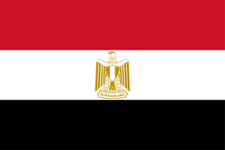
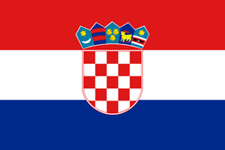

Foram definidos os três finalistas para o prêmio de Jogador do Ano da Uefa 2017/2018:
Cristiano Ronaldo, Mohamed Salah e Luka Modric.

Cristiano Ronaldo
Venceu a Liga dos Campeões da UEFA de 2017/18 com o Real Madrid
Terminou em 2017/18 como o melhor marcador da Liga dos Campeões com 15 gols
Ganhou o Mundial de Clubes da FIFA nos Emirados Árabes Unidos 2017

Mohamed Salah
Ajudou o Liverpool a chegar na final da UEFA Champions League na primeira temporada
Marcou 32 gols na campanha da Premier League inglesa, estabelecendo novo recorde de gols marcados
Vice-artilheiro da Liga dos Campeões 2017/18

Luka Modric
Foi o capitão da Croácia em sua primeira final da Copa do Mundo da FIFA
Ganhou a bola de ouro de melhor jogador da Copa do Mundo Rússia 2018
Ajudou o Real Madrid a conquistar a Liga dos Campeões e a Copa do Mundo de Clubes da FIFA
Numeros na temporada
| Nome | Jogos | Gols | Assistencias |
|---|---|---|---|
| Cristiano Ronaldo | 44 | 44 | 8 |
| Mohamed Salah | 52 | 44 | 16 |
| Luka Modric | 43 | 2 | 8 |